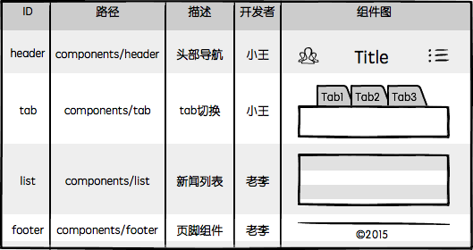
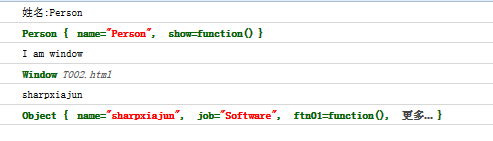

前端，是一种GUI软件
现如今前端可谓包罗万象，产品形态五花八门，涉猎极广，什么高大上的基础库/框架，拽炫酷的宣传页面，还有屌炸天的小游戏……不过这些一两个文件的小项目并非是前端技术的主要应用场景，更具商业价值的则是复杂的Web应用，它们功能完善，界面繁多，为用户提供了完整的产品体验，可能是新闻聚合网站，可能是在线购物平台，可能是社交网络，可能是金融信贷应用，可能是音乐互动社区，也可能是视频上传与分享平台……

尽管Web应用的复杂程度与日俱增，用户对其前端界面也提出了更高的要求，但时至今日仍然没有多少前端开发者会从软件工程的角度去思考前端开发，来助力团队的开发效率，更有甚者还对前端保留着”如玩具般简单“的刻板印象，日复一日，刀耕火种。历史悠久的前端开发，始终像是放养的野孩子，原始如斯，不免让人慨叹！
前端工程的三个阶段
现在的前端开发倒也并非一无所有，回顾一下曾经经历过或听闻过的项目，为了提升其前端开发效率和运行性能，前端团队的工程建设大致会经历三个阶段：
第一阶段：库/框架选型

前端工程建设的第一项任务就是根据项目特征进行技术选型。
基本上现在没有人完全从0开始做网站，哪怕是政府项目用个jquery都很正常吧，React/Angularjs等框架横空出世，解放了不少生产力，合理的技术选型可以为项目节省许多工程量这点毋庸置疑。
第二阶段：简单构建优化

选型之后基本上就可以开始敲码了，不过光解决开发效率还不够，必须要兼顾运行性能。前端工程进行到第二阶段会选型一种构建工具，对代码进行压缩，校验，之后再以页面为单位进行简单的资源合并。
前端开发工程化程度之低，常常出乎我的意料，我之前在百度工作时是没有多少概念的，直到离开大公司的温室，去到业界与更多的团队交流才发现，能做到这个阶段在业界来说已然超出平均水平，属于“具备较高工程化程度”的团队了，查看网上形形色色的网页源代码，能做到最基本的JS/CSS压缩的Web应用都已跨入标准互联网公司行列，不难理解为什么很多前端团队对于前端工程构建的认知还仅停留在“压缩、校验、合并”这种程度。
第三阶段：JS/CSS模块化开发

分而治之是软件工程中的重要思想，是复杂系统开发和维护的基石，这点放在前端开发中同样适用。在解决了基本开发效率运行效率问题之后，前端团队开始思考维护效率，模块化是目前前端最流行的分治手段。
很多人觉得模块化开发的工程意义是复用，我不太认可这种看法，在我看来，模块化开发的最大价值应该是分治，是分治，分治！（重说三）。
不管你将来是否要复用某段代码，你都有充分的理由将其分治为一个模块。
JS模块化方案很多，AMD/CommonJS/UMD/ES6 Module等，对应的框架和工具也一大堆，说起来很烦，大家自行百度吧；CSS模块化开发基本都是在less、sass、stylus等预处理器的import/mixin特性支持下实现的。虽然这些技术由来已久，在如今这个“言必及React”的时代略显落伍，但想想业界的绝大多数团队的工程化落后程度，放眼望去，毫不夸张的说，能达到第三阶段的前端团队已属于高端行列，基本具备了开发维护一般规模Web应用的能力。然而，做到这些就够了么？Naive！
第四阶段
前端是一种技术问题较少、工程问题较多的软件开发领域。
当我们要开发一款完整的Web应用时，前端将面临更多的工程问题，比如：
- 大体量：多功能、多页面、多状态、多系统
- 大规模：多人甚至多团队合作开发
- 高性能：CDN部署、缓存控制、文件指纹、缓存复用、请求合并、按需加载、同步/异步加载、移动端首屏CSS内嵌、HTTP 2.0服务端资源推送。
扩展阅读：大公司里怎样开发和部署前端代码？
这些无疑是一系列严肃的系统工程问题。
前面讲的三个阶段虽然相比曾经“茹毛饮血”的时代进步不少，但用于支撑第四阶段的多人合作开发以及精细的性能优化似乎还欠缺点什么。到底，缺什么呢？
没有银弹
读过《人月神话》的人应该都听说过，软件工程 没有银弹。没错，前端开发同样没有银弹，可是现在是连™铅弹都没有的年月！（刚有了BB弹，摔）前端历来以“简单”著称，在前端开发者群体中，小而美的价值观占据着主要的话语权，甚至成为了某种信仰，想与其他人交流一下工程方面的心得，得到的回应往往都是两个字：太重。
重你妹！你的脑容量只有4K吗？
工程方案其实也可以小而美！只不过它的小而美不是指代码量，而是指“规则”。找到问题的根源，用最少最简单明了的规则制定出最容易遵守最容易理解的开发规范或工具，以提升开发效率和工程质量，这同样是小而美的典范！
2011年我有幸参与到 FIS 项目中，与百度众多大中型项目的前端研发团队共同合作，不断探索实践前端开发的工程化解决方案，13年离开百度去往UC，面对完全不同的产品形态，不同的业务场景，不同的适配终端，甚至不同的网络环境，过往的方法论仍然能够快速落地，为多个团队的不同业务场景量身定制出合理的前端解决方案。
这些经历让我明悟了一个道理：
进入第四阶段，我们只需做好两件事就能大幅提升前端开发效率，并且兼顾运行性能，那就是——组件化开发与资源管理。
第一件事：组件化开发
分治的确是非常重要的工程优化手段。在我看来，前端作为一种GUI软件，光有JS/CSS的模块化还不够，对于UI组件的分治也有着同样迫切的需求：

如上图，这是我所信仰的前端组件化开发理念，简单解读一下：
- 页面上的每个 独立的 可视/可交互区域视为一个组件；
- 每个组件对应一个工程目录，组件所需的各种资源都在这个目录下就近维护；
- 由于组件具有独立性，因此组件与组件之间可以 自由组合；
- 页面只不过是组件的容器，负责组合组件形成功能完整的界面；
- 当不需要某个组件，或者想要替换组件时，可以整个目录删除/替换。
其中第二项描述的就近维护原则，是我觉得最具工程价值的地方，它为前端开发提供了很好的分治策略，每个开发者都将清楚的知道，自己所开发维护的功能单元，其代码必然存在于对应的组件目录中，在那个目录下能找到有关这个功能单元的所有内部逻辑，样式也好，JS也好，页面结构也好，都在那里。
组件化开发具有较高的通用性，无论是前端渲染的单页面应用，还是后端模板渲染的多页面应用，组件化开发的概念都能适用。组件HTML部分根据业务选型的不同，可以是静态的HTML文件，可以是前端模板，也可以是后端模板：

不同的技术选型决定了不同的组件封装和调用策略。

由于系统功能被分治到独立的模块或组件中，粒度比较精细，组织形式松散，开发者之间不会产生开发时序的依赖，大幅提升并行的开发效率，理论上允许随时加入新成员认领组件开发或维护工作，也更容易支持多个团队共同维护一个大型站点的开发。
结合前面提到的模块化开发，整个前端项目可以划分为这么几种开发概念：
| 名称 | 说明 | 举例 |
|---|---|---|
| JS模块 | 独立的算法和数据单元 | 浏览器环境检测(detect)，网络请求(ajax)，应用配置(config)，DOM操作(dom)，工具函数(utils)，以及组件里的JS单元 |
| CSS模块 | 独立的功能性样式单元 | 栅格系统(grid)，字体图标(icon-fonts)，动画样式(animate)，以及组件里的CSS单元 |
| UI组件 | 独立的可视/可交互功能单元 | 页头(header)，页尾(footer)，导航栏(nav)，搜索框(search) |
| 页面 | 前端这种GUI软件的界面状态，是UI组件的容器 | 首页(index)，列表页(list)，用户管理(user) |
| 应用 | 整个项目或整个站点被称之为应用，由多个页面组成 |
以上5种开发概念以相对较少的规则组成了前端开发的基本工程结构，基于这些理念，我眼中的前端开发就成了这个样子：
| 示意图 | 描述 |
|---|---|

|
整个Web应用由页面组成 |

|
页面由组件组成 |

|
一个组件一个目录，资源就近维护 |

|
组件可组合， 组件的JS可依赖其他JS模块， CSS可依赖其他CSS单元 |
综合上面的描述，对于一般中小规模的项目，大致可以规划出这样的源码目录结构：

如果项目规模较大，涉及多个团队协作，还可以将具有相关业务功能的页面组织在一起，形成一个子系统，进一步将整个站点拆分出多个子系统来分配给不同团队维护，针对这种情况后面我会单开文章详细介绍。
以上架构设计历经许多不同公司不同业务场景的前端团队验证，收获了不错的口碑，是行之有效的前端工程分治方案。
吐槽：我本人非常反对某些前端团队将前端开发划分为“JS开发”和“页面重构”两种岗位，更倾向于组件粒度的开发理念，对GUI软件开发的分工规划应该以功能为单位，而不是开发语言；对开发者的技术要求也应该是掌握完整的端内技术
第二件事：“智能”静态资源管理
上面提到的模块化/组件化开发，仅仅描述了一种开发理念，也可以认为是一种开发规范，倘若你认可这规范，对它的分治策略产生了共鸣，那我们就可以继续聊聊它的具体实现了。
很明显，模块化/组件化开发之后，我们最终要解决的，就是模块/组件加载的技术问题。然而前端与客户端GUI软件有一个很大的不同：
前端是一种远程部署，运行时增量下载的GUI软件
前端应用没有安装过程，其所需程序资源都部署在远程服务器，用户使用浏览器访问不同的页面来加载不同的资源，随着页面访问的增加，渐进式的将整个程序下载到本地运行，“增量下载”是前端在工程上有别于客户端GUI软件的根本原因。

上图展示了一款界面繁多功能丰富的应用，如果采用Web实现，相信也是不小的体量，如果用户第一次访问页面就强制其加载全站静态资源再展示，相信会有很多用户因为失去耐心而流失。根据“增量”的原则，我们应该精心规划每个页面的资源加载策略，使得用户无论访问哪个页面都能按需加载页面所需资源，没访问过的无需加载，访问过的可以缓存复用，最终带来流畅的应用体验。
这正是Web应用“免安装”的魅力所在。
由“增量”原则引申出的前端优化技巧几乎成为了性能优化的核心，有加载相关的按需加载、延迟加载、预加载、请求合并等策略；有缓存相关的浏览器缓存利用，缓存更新、缓存共享、非覆盖式发布等方案；还有复杂的BigRender、BigPipe、Quickling、PageCache等技术。这些优化方案无不围绕着如何将增量原则做到极致而展开。
所以我觉得：
第四阶段前端开发最迫切需要做好的就是在基础架构中贯彻增量原则。
相信这种贯彻不会随着时间的推移而改变，在可预见的未来，无论在HTTP1.x还是HTTP2.0时代，无论在ES5亦或者ES6/7时代，无论是AMD/CommonJS/UMD亦或者ES6 module时代，无论端内技术如何变迁，我们都有足够充分的理由要做好前端程序资源的增量加载。
正如前面说到的，第三阶段前端工程缺少点什么呢？我觉得是在其基础架构中缺少这样一种“智能”的资源加载方案。没有这样的方案，很难将前端应用的规模发展到第四阶段，很难实现落地前面介绍的那种组件化开发方案，也很难让多方合作高效率的完成一项大型应用的开发，并保证其最终运行性能良好。在第四阶段，我们需要强大的工程化手段来管理”玩具般简单“的前端开发。
在我的印象中，Facebook是这方面探索的伟大先驱之一，早在2010年的Velocity China大会上，来自Facebook的David Wei博士就为业界展示了他们令人惊艳的静态网页资源管理和优化技术。
David Wei博士在当年的交流会上提到过一些关于Facebook的一些产品数据：
- Facebook整站有10000+个静态资源；
- 每个静态资源都有可能被翻译成超过100种语言版本；
- 每种资源又会针对浏览器生成3种不同的版本；
- 要针对不同带宽的用户做5种不同的打包方法；
- 有3、4个不同的用户组，用于小批次体验新的产品功能；
- 还要考虑不同的送达方法，可以直接送达，或者通过iframe的方式提升资源并行加载的速度；
- 静态资源的压缩和非压缩状态可切换，用于调试和定位线上问题
这是一个状态爆炸的问题，将所有状态乘起来，整个网站的资源组合方式会达到几百万种之多（去重之后统计大概有300万种组合方式）。支撑这么大规模前端项目运行的底层架构正是魏博士在那次演讲中分享的Static Resource Management System(静态资源管理系统)，用以解决Facebook项目中有关前端工程的3D问题（Development，Deployment，Debugging）。
那段时间 FIS 项目正好遇到瓶颈，当时的FIS还是一个用php写的task-based构建工具，那时候对于前端工程的认知度很低，觉得前端构建不就是几个压缩优化校验打包任务的组合吗，写好流程调度，就针对不同需求写插件呗，看似非常简单。但当我们支撑越来越多的业务团队，接触到各种不同的业务场景时，我们深刻的感受到task-based工具的粗糙，团队每天疲于根据各种业务场景编写各种打包插件，构建逻辑异常复杂，隐隐看到不可控的迹象。
我们很快意识到把基础架构放到构建工具中实现是一件很愚蠢的事，试图依靠构建工具实现各种优化策略使得构建变成了一个巨大的黑盒，一旦发生问题，定位起来非常困难，而且每种业务场景都有不同的优化需求，构建工具只能通过静态分析来优化加载，具有很大的局限性，单页面/多页面/PC端/移动端/前端渲染/后端渲染/多语言/多皮肤/高级优化等等资源加载问题，总不能给每个都写一套工具吧，更何况这些问题彼此之间还可以有多种组合应用，工具根本写不过来。
Facebook的做法无疑为我们亮起了一盏明灯，不过可惜它并不开源（不是技术封锁，而是这个系统依赖FB体系中的其他方面，通用性不强，开源意义不大），我们只能尝试挖掘相关信息，网上对它的完整介绍还是非常非常少，分析facebook的前端代码也没有太多收获，后来无意中发现了facebook使用的项目管理工具phabricator中的一个静态管理方案Celerity，以及相关的 说明，看它的描述很像是Facebook静态资源管理系统的一个mini版！
简单看过整个系统之后发现原理并不复杂（小而美的典范），它是通过一个小工具扫描所有静态资源，生成一张资源表，然后有一个PHP实现的资源管理框架（Celerity）提供了资源加载接口，替代了传统的script/link等静态的资源加载标签，最终通过查表来加载资源。
虽然没有真正看过FB的那套系统，但眼前的这个小小的框架给了当时的我们足够多的启示：
静态资源管理系统 = 资源表 + 资源加载框架
多么优雅的实现啊！
资源表是一份数据文件（比如JSON），是项目中所有静态资源（主要是JS和CSS）的构建信息记录，通过构建工具扫描项目源码生成，是一种k-v结构的数据，以每个资源的id为key，记录了资源的类别、部署路径、依赖关系、打包合并等内容，比如：
{
"a.js": {
"url": "/static/js/a.5f100fa.js",
"dep": [ "b.js", "a.css" ]
},
"a.css": {
"url": "/static/css/a.63cf374.css",
"dep": [ "button.css" ]
},
"b.js": {
"url": "/static/js/b.97193bf.js"
},
"button.css": {
"url": "/static/css/button.de33108.css"
}
}
而资源加载框架则提供一些资源引用的API，让开发者根据id来引用资源，替代静态的script/link标签来收集、去重、按需加载资源。调用这些接口时，框架通过查表来查找资源的各项信息，并递归查找其依赖的资源的信息，然后我们可以在这个过程中实现各种性能优化算法来“智能”加载资源。
根据业务场景的不同，加载框架可以在浏览器中用JS实现，也可以是后端模板引擎中用服务端语言实现，甚至二者的组合，不一而足。
这种设计很快被验证具有足够的灵活性，能够完美支撑不同团队不同技术规范下的性能优化需求，前面提到的按需加载、延迟加载、预加载、请求合并、文件指纹、CDN部署、Bigpipe、Quickling、BigRender、首屏CSS内嵌、HTTP 2.0服务端推送等等性能优化手段都可以很容易的在这种架构上实现，甚至可以根据性能日志自动进行优化（Facebook已实现）。
因为有了资源表，我们可以很方便的控制资源加载，通过各种手段在运行时计算页面的资源使用情况，从而获得最佳加载性能。无论是前端渲染的单页面应用，还是后端渲染的多页面应用，这种方法都同样适用。
此外，它还很巧妙的约束了构建工具的职责——只生成资源表。资源表是非常通用的数据结构，无论什么业务场景，其业务代码最终都可以被扫描为相同结构的表数据，并标记资源间的依赖关系，有了表之后我们只需根据不同的业务场景定制不同的资源加载框架就行了，从此彻底告别一个团队维护一套工具的时代！！！

恩，如你所见，虽然彻底告别了一个团队一套工具的时代，但似乎又进入了一个团队一套框架的时代。其实还是有差别的，因为框架具有很大的灵活性，而且不那么黑盒，采用框架实现资源管理相比构建更容易调试、定位和升级变更。
深耕静态资源加载框架可以带来许多收益，而且有足够的灵活性和健壮性面向未来的技术变革，这个我们留作后话。
总结
回顾一下前面提到过的前端工程三个阶段：
- 第一阶段：库/框架选型
- 第二阶段：简单构建优化
- 第三阶段：JS/CSS模块化开发
现在补充上第四阶段：
- 第四阶段：组件化开发与资源管理
由于先天缺陷，前端相比其他软件开发，在基础架构上更加迫切的需要组件化开发和资源管理，而解决资源管理的方法其实一点也不复杂：
一个通用的资源表生成工具 + 基于表的资源加载框架
近几年来各种你听到过的各种资源加载优化策略大部分都可以在这样一套基础上实现，而这种优化对于业务来说是完全透明的，不需要重构的性能优化——这不正是我们一直所期盼的吗？正如魏小亮博士所说：我们可以把优秀的人集中起来去优化加载。
如何选型技术、如何定制规范、如何分治系统、如何优化性能、如何加载资源，当你从切图开始转变为思考这些问题的时候，我想说：
你好，工程师！
前端工程其实是一个很大的话题，开发仅是其中的一部分。
相关文章：
性能优化原则及分类
po主先假设本文的读者是有前端开发经验的工程师，并对企业级web应用开发及性能优化有一定的思考，因此我不会重复介绍雅虎14条性能优化原则。如果您没有这些前续知识，请移步 这里 来学习。
首先，我们把雅虎14条优化原则，《高性能网站建设指南》以及《高性能网站建设进阶指南》中提到的优化点做一次梳理，按照优化方向分类，可以得到这样一张表格：
| 优化方向 | 优化手段 |
|---|---|
| 请求数量 | 合并脚本和样式表，CSS Sprites，拆分初始化负载，划分主域 |
| 请求带宽 | 开启GZip，精简JavaScript，移除重复脚本，图像优化 |
| 缓存利用 | 使用CDN，使用外部JavaScript和CSS，添加Expires头， 减少DNS查找，配置ETag，使AjaX可缓存 |
| 页面结构 | 将样式表放在顶部，将脚本放在底部，尽早刷新文档的输出 |
| 代码校验 | 避免CSS表达式，避免重定向 |
目前大多数前端团队可以利用 yui compressor 或者 google closure compiler 等压缩工具很容易做到 精简Javascript 这条原则；同样的，也可以使用图片压缩工具对图像进行压缩，实现 图像优化 原则。这两条原则是对单个资源的处理，因此不会引起任何工程方面的问题。很多团队也通过引入代码校验流程来确保实现
避免css表达式 和 避免重定向 原则。目前绝大多数互联网公司也已经开启了服务端的Gzip压缩，并使用CDN实现静态资源的缓存和快速访问；一些技术实力雄厚的前端团队甚至研发出了自动CSS Sprites工具，解决了CSS Sprites在工程维护方面的难题。使用“查找-替换”思路，我们似乎也可以很好的实现 划分主域 原则。
我们把以上这些已经成熟应用到实际生产中的优化手段去除掉，留下那些还没有很好实现的优化原则。再来回顾一下之前的性能优化分类：
| 优化方向 | 优化手段 |
|---|---|
| 请求数量 | 合并脚本和样式表，拆分初始化负载 |
| 请求带宽 | 移除重复脚本 |
| 缓存利用 | 添加Expires头，配置ETag，使Ajax可缓存 |
| 页面结构 | 将样式表放在顶部，将脚本放在底部，尽早刷新文档的输出 |
有很多顶尖的前端团队可以将上述还剩下的优化原则也都一一解决，但业界大多数团队都还没能很好的解决这些问题。因此，本文将就这些原则的解决方案做进一步的分析与讲解，从而为那些还没有进入前端工业化开发的团队提供一些基础技术建设意见，也借此机会与业界顶尖的前端团队在工业化工程化方向上交流一下彼此的心得。
静态资源版本更新与缓存
缓存利用 分类中保留了 添加Expires头 和 配置ETag 两项。或许有些人会质疑，明明这两项只要配置了服务器的相关选项就可以实现，为什么说它们难以解决呢？确实，开启这两项很容易，但开启了缓存后，我们的项目就开始面临另一个挑战： 如何更新这些缓存？
相信大多数团队也找到了类似的答案，它和《高性能网站建设指南》关于“添加Expires头”所说的原则一样——修订文件名。即：
最有效的解决方案是修改其所有链接，这样，全新的请求将从原始服务器下载最新的内容。
思路没错，但要怎么改变链接呢？变成什么样的链接才能有效更新缓存，又能最大限度避免那些没有修改过的文件缓存不失效呢？
先来看看现在一般前端团队的做法：
<h1>hello world</h1>
<script type="text/javascript" src="a.js?t=201404231123"></script>
<script type="text/javascript" src="b.js?t=201404231123"></script>
<script type="text/javascript" src="c.js?t=201404231123"></script>
<script type="text/javascript" src="d.js?t=201404231123"></script>
<script type="text/javascript" src="e.js?t=201404231123"></script>ps: 也有团队采用构建版本号为静态资源请求添加query，它们在本质上是没有区别的，在此就不赘述了。
接下来，项目升级，比如页面上的html结构发生变化，对应还要修改 a.js 这个文件，得到的构建结果如下：
<header>hello world</header>
<script type="text/javascript" src="a.js?t=201404231826"></script>
<script type="text/javascript" src="b.js?t=201404231826"></script>
<script type="text/javascript" src="c.js?t=201404231826"></script>
<script type="text/javascript" src="d.js?t=201404231826"></script>
<script type="text/javascript" src="e.js?t=201404231826"></script>为了触发用户浏览器的缓存更新，我们需要更改静态资源的url地址，如果采用构建信息（时间戳、版本号等）作为url修改的依据，如上述代码所示，我们只修改了一个a.js文件，但再次构建会让所有请求都更改了url地址，用户再度访问页面那些没有修改过的静态资源的(b.js，b.js，c.js，d.js，e.js)的浏览器缓存也一同失效了。
使用构建信息作为静态资源更新标记会导致每次构建发布后所有静态资源都被迫更新，浏览器缓存利用率降低，给性能带来伤害。
此外，采用添加query的方式来清除缓存还有一个弊端，就是 覆盖式发布 的上线问题。

采用query更新缓存的方式实际上要覆盖线上文件的，index.html和a.js总有一个先后的顺序，从而中间出现一段或大或小的时间间隔。尤其是当页面是后端渲染的模板的时候，静态资源和模板是部署在不同的机器集群上的，上线的过程中，静态资源和页面文件的部署时间间隔可能会非常长，对于一个大型互联网应用来说即使在一个很小的时间间隔内，都有可能出现新用户访问。在这个时间间隔中，访问了网站的用户会发生什么情况呢？
- 如果先覆盖index.html，后覆盖a.js，用户在这个时间间隙访问，会得到新的index.html配合旧的a.js的情况，从而出现错误的页面。
- 如果先覆盖a.js，后覆盖index.html，用户在这个间隙访问，会得到旧的index.html配合新的a.js的情况，从而也出现了错误的页面。
这就是为什么大型web应用在版本上线的过程中经常会较集中的出现前端报错日志的原因，也是一些互联网公司选择加班到半夜等待访问低峰期再上线的原因之一。
对于静态资源缓存更新的问题，目前来说最优方案就是 基于文件内容的hash版本冗余机制 了。也就是说，我们希望项目源码是这么写的：
<script type="text/javascript" src="a.js"></script>发布后代码变成
<script type="text/javascript" src="a_8244e91.js"></script>也就是a.js发布出来后被修改了文件名，产生一个新文件，并不是覆盖已有文件。其中”_82244e91”这串字符是根据a.js的文件内容进行hash运算得到的，只有文件内容发生变化了才会有更改。由于将文件发布为带有hash的新文件，而不是同名文件覆盖，因此不会出现上述说的那些问题。同时，这么做还有其他的好处：
- 上线的a.js不是同名文件覆盖，而是文件名+hash的冗余，所以可以先上线静态资源，再上线html页面，不存在间隙问题；
- 遇到问题回滚版本的时候，无需回滚a.js，只须回滚页面即可；
- 由于静态资源版本号是文件内容的hash，因此所有静态资源可以开启永久强缓存，只有更新了内容的文件才会缓存失效，缓存利用率大增；
以文件内容的hash值为依据生产新文件的非覆盖式发布策略是解决静态资源缓存更新最有效的手段。
虽然这种方案是相比之下最完美的解决方案，但它无法通过手工的形式来维护，因为要依靠手工的形式来计算和替换hash值，并生成相应的文件，将是一项非常繁琐且容易出错的工作，因此我们需要借助工具来处理。
用grunt来实现md5功能是非常困难的，因为grunt只是一个task管理器，而md5计算需要构建工具具有递归编译的能，而不是简单的任务调度。考虑这样的例子：
由于我们的资源版本号是通过对文件内容进行hash运算得到，如上图所示，index.html中引用的a.css文件的内容其实也包含了a.png的hash运算结果，因此我们在修改index.html中a.css的引用时，不能直接计算a.css的内容hash，而是要先计算出a.png的内容hash，替换a.css中的引用，得到了a.css的最终内容，再做hash运算，最后替换index.html中的引用。
计算index.html中引用的a.css文件的url过程：
1. 压缩a.png后计算其内容的md5值
2. 将a.png的md5写入a.css，再压缩a.css，计算其内容的md5值
3. 将a.css的md5值写入到index.html中
grunt等task-based的工具是很难在task之间协作处理这样的需求的。
在解决了基于内容hash的版本更新问题之后，我们可以将所有前端静态资源开启永久强缓存，每次版本发布都可以首先让静态资源全量上线，再进一步上线模板或者页面文件，再也不用担心各种缓存和时间间隙的问题了！
静态资源管理与模块化框架
解决了静态资源缓存问题之后，让我们再来看看前面的优化原则表还剩些什么：
| 优化方向 | 优化手段 |
|---|---|
| 请求数量 | 合并脚本和样式表，拆分初始化负载 |
| 请求带宽 | 移除重复脚本 |
| 缓存利用 | 使Ajax可缓存 |
| 页面结构 | 将样式表放在顶部，将脚本放在底部，尽早刷新文档的输出 |
很不幸，剩下的优化原则都不是使用工具就能很好实现的。或许有人会辩驳：“我用某某工具可以实现脚本和样式表合并”。嗯，必须承认，使用工具进行资源合并并替换引用或许是一个不错的办法，但在大型web应用，这种方式有一些非常严重的缺陷，来看一个很熟悉的例子 ：
某个web产品页面有A、B、C三个资源
工程师根据“减少HTTP请求”的优化原则合并了资源
产品经理要求C模块按需出现，此时C资源已出现多余的可能
C模块不再需要了，注释掉吧！代码1秒钟搞定，但C资源通常不敢轻易剔除

不知不觉中，性能优化变成了性能恶化……
这个例子来自 Facebook静态网页资源的管理和优化@Velocity China 2010
事实上，使用工具在线下进行静态资源合并是无法解决资源按需加载的问题的。如果解决不了按需加载，则必会导致资源的冗余；此外，线下通过工具实现的资源合并通常会使得资源加载和使用的分离，比如在页面头部或配置文件中写资源引用及合并信息，而用到这些资源的html组件写在了页面其他地方，这种书写方式在工程上非常容易引起维护不同步的问题，导致使用资源的代码删除了，引用资源的代码却还在的情况。因此，在工业上要实现资源合并至少要满足如下需求：
- 确实能减少HTTP请求，这是基本要求（合并）
- 在使用资源的地方引用资源（就近依赖），不使用不加载（按需）
- 虽然资源引用不是集中书写的，但资源引用的代码最终还能出现在页面头部（css）或尾部（js）
- 能够避免重复加载资源（去重）
将以上要求综合考虑，不难发现，单纯依靠前端技术或者工具处理是很难达到这些理想要求的。
接下来我会讲述一种新的模板架构设计，用以实现前面说到那些性能优化原则，同时满足工程开发和维护的需要，这种架构设计的核心思想就是：
基于依赖关系表的静态资源管理系统与模块化框架设计
考虑一段这样的页面代码：
<html>
<head>
<title>page</title>
<link rel="stylesheet" type="text/css" href="a.css"/>
<link rel="stylesheet" type="text/css" href="b.css"/>
<link rel="stylesheet" type="text/css" href="c.css"/>
</head>
<body>
<div> content of module a </div>
<div> content of module b </div>
<div> content of module c </div>
</body>
</html>根据资源合并需求中的第二项，我们希望资源引用与使用能尽量靠近，这样将来维护起来会更容易一些，因此，理想的源码是：
<html>
<head>
<title>page</title>
</head>
<body>
<link rel="stylesheet" type="text/css" href="a.css"/>
<div> content of module a </div>
<link rel="stylesheet" type="text/css" href="b.css"/>
<div> content of module b </div>
<link rel="stylesheet" type="text/css" href="c.css"/>
<div> content of module c </div>
</body>
</html>当然，把这样的页面直接送达给浏览器用户是会有严重的页面闪烁问题的，所以我们实际上仍然希望最终页面输出的结果还是如最开始的截图一样，将css放在头部输出。这就意味着，页面结构需要有一些调整，并且有能力收集资源加载需求，那么我们考虑一下这样的源码（以php为例）：
<html>
<head>
<title>page</title>
<!--[ CSS LINKS PLACEHOLDER ]-->
</head>
<body>
<?php require_static('a.css'); ?>
<div> content of module a </div>
<?php require_static('b.css'); ?>
<div> content of module b </div>
<?php require_static('c.css'); ?>
<div> content of module c </div>
</body>
</html>在页面的头部插入一个html注释 <!--[CSS LINKS PLACEHOLDER]--> 作为占位，而将原来字面书写的资源引用改成模板接口 require_static 调用，该接口负责收集页面所需资源。
require_static接口实现非常简单，就是准备一个数组，收集资源引用，并且可以去重。最后在页面输出的前一刻，我们将require_static在运行时收集到的 a.css、b.css、c.css 三个资源拼接成html标签，替换掉注释占位 <!--[CSS LINKS PLACEHOLDER]-->，从而得到我们需要的页面结构。
经过实践总结，可以发现模板层面只要实现三个开发接口，就可以比较完美的实现目前遗留的大部分性能优化原则，这三个接口分别是：
- require_static(res_id)：收集资源加载需求的接口，参数是静态资源id。
- load_widget(wiget_id)：加载拆分成小组件模板的接口。你可以叫它为widget、component或者pagelet之类的。总之，我们需要一个接口把一个大的页面模板拆分成一个个的小部分来维护，最后在原来的页面中以组件为单位来加载这些小部件。
- script(code)：收集写在模板中的js脚本，使之出现的页面底部，从而实现性能优化原则中的
将js放在页面底部原则。
实现了这些接口之后，一个重构后的模板页面的源代码可能看起来就是这样的了：
<html>
<head>
<title>page</title>
<?php require_static('jquery.js'); ?>
<?php require_static('bootstrap.css'); ?>
<?php require_static('bootstrap.js'); ?>
<!--[ CSS LINKS PLACEHOLDER ]-->
</head>
<body>
<?php load_widget('a'); ?>
<?php load_widget('b'); ?>
<?php load_widget('c'); ?>
<!--[ SCRIPTS PLACEHOLDER ]-->
</body>
</html>而最终在模板解析的过程中，资源收集与去重、页面script收集、占位符替换操作，最终从服务端发送出来的html代码为：
<html>
<head>
<title>page</title>
<link rel="stylesheet" type="text/css" href="bootstrap.css"/>
<link rel="stylesheet" type="text/css" href="a.css"/>
<link rel="stylesheet" type="text/css" href="b.css"/>
<link rel="stylesheet" type="text/css" href="c.css"/>
</head>
<body>
<div> content of module a </div>
<div> content of module b </div>
<div> content of module c </div>
<script type="text/javascript" src="jquery.js"></script>
<script type="text/javascript" src="bootstrap.js"></script>
<script type="text/javascript" src="a.js"></script>
<script type="text/javascript" src="b.js"></script>
<script type="text/javascript" src="c.js"></script>
</body>
</html>不难看出，我们目前已经实现了 按需加载，将脚本放在底部，将样式表放在头部 三项优化原则。
前面讲到静态资源在上线后需要添加hash戳作为版本标识，那么这种使用模板语言来收集的静态资源该如何实现这项功能呢？
答案是：静态资源依赖关系表。
考虑这样的目录结构：
project
├── widget
│ ├── a
│ │ ├── a.css
│ │ ├── a.js
│ │ └── a.php
│ ├── b
│ │ ├── b.css
│ │ ├── b.js
│ │ └── b.php
│ └── c
│ ├── c.css
│ ├── c.js
│ └── c.php
├── bootstrap.css
├── bootstrap.js
├── index.php
└── jquery.js
如果我们可以使用工具扫描整个project目录，然后创建一张资源表，同时记录每个资源的部署路径，得到这样的一张表：
{
"res" : {
"widget/a/a.css" : "/widget/a/a_1688c82.css",
"widget/a/a.js" : "/widget/a/a_ac3123s.js",
"widget/b/b.css" : "/widget/b/b_52923ed.css",
"widget/b/b.js" : "/widget/b/b_a5cd123.js",
"widget/c/c.css" : "/widget/c/c_03cab13.css",
"widget/c/c.js" : "/widget/c/c_bf0ae3f.js",
"jquery.js" : "/jquery_9151577.js",
"bootstrap.css" : "/bootstrap_f5ba12d.css",
"bootstrap.js" : "/bootstrap_a0b3ef9.js"
},
"pkg" : {}
}基于这张表，我们就很容易实现 require_static(file_id)，load_widget(widget_id) 这两个模板接口了。以load_widget为例：
function load_widget($id){
//从json文件中读取资源表
$map = load_map();
//查找静态资源
$filename = 'widget/' . $id . '/' . $id;
//查找js文件
$js = $filename . '.js';
if(isset($map['res'][$js])) {
//如果有对应的js资源，就收集起来
collect_js_static($map['res'][$js]);
}
//查找css文件
$css = $filename . '.css';
if(isset($map['res'][$css])) {
//如果有对应的css资源，就收集起来
collect_css_static($map['res'][$css]);
}
include $filename . '.php';
}利用查表来解决md5戳的问题，这样，我们的页面最终送达给用户的结果就是这样的：
<html>
<head>
<title>page</title>
<link rel="stylesheet" type="text/css" href="/bootstrap_f5ba12d.css"/>
<link rel="stylesheet" type="text/css" href="/widget/a/a_1688c82.css"/>
<link rel="stylesheet" type="text/css" href="/widget/b/b_52923ed.css"/>
<link rel="stylesheet" type="text/css" href="/widget/c/c_03cab13.css"/>
</head>
<body>
<div> content of module a </div>
<div> content of module b </div>
<div> content of module c </div>
<script type="text/javascript" src="/jquery_9151577.js"></script>
<script type="text/javascript" src="/bootstrap_a0b3ef9.js"></script>
<script type="text/javascript" src="/widget/a/a_ac3123s.js"></script>
<script type="text/javascript" src="/widget/b/b_a5cd123.js"></script>
<script type="text/javascript" src="/widget/c/c_bf0ae3f.js"></script>
</body>
</html>接下来，我们讨论基于表的设计思想上是如何实现静态资源合并的。或许有些团队使用过combo服务，也就是我们在最终拼接生成页面资源引用的时候，并不是生成多个独立的link标签，而是将资源地址拼接成一个url路径，请求一种线上的动态资源合并服务，从而实现减少HTTP请求的需求，比如前面的例子，稍作调整即可得到这样的结果：
<html>
<head>
<title>page</title>
<link rel="stylesheet" type="text/css" href="/??bootstrap_f5ba12d.css,widget/a/a_1688c82.css,widget/b/b_52923ed.css,widget/c/c_03cab13.css"/>
</head>
<body>
<div> content of module a </div>
<div> content of module b </div>
<div> content of module c </div>
<script type="text/javascript" src="/??jquery_9151577.js,bootstrap_a0b3ef9.js,widget/a/a_ac3123s.js,widget/b/b_a5cd123.js,widget/c/c_bf0ae3f.js"></script>
</body>
</html>这个 /??file1,file2,file3,… 的url请求响应就是动态combo服务提供的，它的原理很简单，就是根据url找到对应的多个文件，合并成一个文件来响应请求，并将其缓存，以加快访问速度。
这种方法很巧妙，有些服务器甚至直接集成了这类模块来方便的开启此项服务，这种做法也是大多数大型web应用的资源合并做法。但它也存在一些缺陷：
- 浏览器有url长度限制，因此不能无限制的合并资源。
- 如果用户在网站内有公共资源的两个页面间跳转访问，由于两个页面的combo的url不一样导致用户不能利用浏览器缓存来加快对公共资源的访问速度。
- 如果combo的url中任何一个文件发生改变，都会导致整个url缓存失效，从而导致浏览器缓存利用率降低。
对于上述第二条缺陷，可以举个例子来看说明：
- 假设网站有两个页面A和B
- A页面使用了a，b，c，d四个资源
- B页面使用了a，b，e，f四个资源
- 如果使用combo服务，我们会得：
- A页面的资源引用为：/??
a,b,c,d - B页面的资源引用为：/??
a,b,e,f
- A页面的资源引用为：/??
- 两个页面引用的资源是不同的url，因此浏览器会请求两个合并后的资源文件，跨页面访问没能很好的利用a、b这两个资源的缓存。
很明显，如果combo服务能聪明的知道A页面使用的资源引用为 /??a,b 和 /??c,d，而B页面使用的资源引用为 /??a,b 和 /??e,f就好了。这样当用户在访问A页面之后再访问B页面时，只需要下载B页面的第二个combo文件即可，第一个文件已经在访问A页面时缓存好了的。
基于这样的思考，我们在资源表上新增了一个字段，取名为 pkg，就是资源合并生成的新资源，表的结构会变成：
{
"res" : {
"widget/a/a.css" : "/widget/a/a_1688c82.css",
"widget/a/a.js" : "/widget/a/a_ac3123s.js",
"widget/b/b.css" : "/widget/b/b_52923ed.css",
"widget/b/b.js" : "/widget/b/b_a5cd123.js",
"widget/c/c.css" : "/widget/c/c_03cab13.css",
"widget/c/c.js" : "/widget/c/c_bf0ae3f.js",
"jquery.js" : "/jquery_9151577.js",
"bootstrap.css" : "/bootstrap_f5ba12d.css",
"bootstrap.js" : "/bootstrap_a0b3ef9.js"
},
"pkg" : {
"p0" : {
"url" : "/pkg/lib_cef213d.js",
"has" : [ "jquery.js", "bootstrap.js" ]
},
"p1" : {
"url" : "/pkg/lib_afec33f.css",
"has" : [ "bootstrap.css" ]
},
"p2" : {
"url" : "/pkg/widgets_22feac1.js",
"has" : [
"widget/a/a.js",
"widget/b/b.js",
"widget/c/c.js"
]
},
"p3" : {
"url" : "/pkg/widgets_af23ce5.css",
"has" : [
"widget/a/a.css",
"widget/b/b.css",
"widget/c/c.css"
]
}
}
}相比之前的表，可以看到新表中多了一个pkg字段，并且记录了打包后的文件所包含的独立资源。这样，我们重新设计一下 require_static、load_widget 这两个模板接口，实现这样的逻辑：
在查表的时候，如果一个静态资源有pkg字段，那么就去加载pkg字段所指向的打包文件，否则加载资源本身。
比如执行require_static('bootstrap.js')，查表得知bootstrap.js被打包在了p1中，因此取出p1包的url /pkg/lib_cef213d.js，并且记录页面已加载了 jquery.js 和 bootstrap.js 两个资源。这样一来，之前的模板代码执行之后得到的html就变成了：
<html>
<head>
<title>page</title>
<link rel="stylesheet" type="text/css" href="/pkg/lib_afec33f.css"/>
<link rel="stylesheet" type="text/css" href="/pkg/widgets_af23ce5.css"/>
</head>
<body>
<div> content of module a </div>
<div> content of module b </div>
<div> content of module c </div>
<script type="text/javascript" src="/pkg/lib_cef213d.js"></script>
<script type="text/javascript" src="/pkg/widgets_22feac1.js"></script>
</body>
</html>虽然这种策略请求有4个，不如combo形式的请求少，但可能在统计上是性能更好的方案。由于两个lib打包的文件修改的可能性很小，因此这两个请求的缓存利用率会非常高，每次项目发布后，用户需要重新下载的静态资源可能要比combo请求节省很多带宽。
性能优化既是一个工程问题，又是一个统计问题。优化性能时如果只关注一个页面的首次加载是很片面的。还应该考虑全站页面间跳转、项目迭代后更新资源等情况下的优化策略。
此时，我们又引入了一个新的问题：如何决定哪些文件被打包？
从经验来看，项目初期可以采用人工配置的方式来指定打包情况，比如：
{
"pack" : {
"lib.js" : [ "jquery.js", "bootstrap.js" ],
"lib.css" : "bootstrap.css",
"widgets.js" : "widget/**.js",
"widgets.css" : "widget/**.css"
}
}但随着系统规模的增大，人工配置会带来非常高的维护成本，此时需要一个辅助系统，通过分析线上访问日志和静态资源组合加载情况来自动生成这份配置文件，系统设计如图：
至此，我们通过基于表的静态资源管理系统和三个模板接口实现了几个重要的性能优化原则，现在我们再来回顾一下前面的性能优化原则分类表，剔除掉已经做到了的，看看还剩下哪些没做到的：
| 优化方向 | 优化手段 |
|---|---|
| 请求数量 | 拆分初始化负载 |
| 缓存利用 | 使Ajax可缓存 |
| 页面结构 | 尽早刷新文档的输出 |
拆分初始化负载 的目标是将页面一开始加载时不需要执行的资源从所有资源中分离出来，等到需要的时候再加载。工程师通常没有耐心去区分资源的分类情况，但我们可以利用组件化框架接口来帮助工程师管理资源的使用。还是从例子开始思考，如果我们有一个js文件是用户交互后才需要加载的，会怎样呢：
<html>
<head>
<title>page</title>
<?php require_static('jquery.js'); ?>
<?php require_static('bootstrap.css'); ?>
<?php require_static('bootstrap.js'); ?>
<!--[ CSS LINKS PLACEHOLDER ]-->
</head>
<body>
<?php load_widget('a'); ?>
<?php load_widget('b'); ?>
<?php load_widget('c'); ?>
<?php script('start'); ?>
<script>
$(document.body).click(function(){
require.async('dialog.js', function(dialog){
dialog.show('you catch me!');
});
});
</script>
<?php script('end'); ?>
<!--[ SCRIPTS PLACEHOLDER ]-->
</body>
</html>很明显，dialog.js 这个文件我们不需要在初始化的时候就加载，因此它应该在后续的交互中再加载，但文件都加了md5戳，我们如何能在浏览器环境中知道加载的url呢？
答案就是：把静态资源表的一部分输出在页面上，供前端模块化框架加载静态资源。
我就不多解释代码的执行过程了，大家看到完整的html输出就能理解是怎么回事了：
<html>
<head>
<title>page</title>
<link rel="stylesheet" type="text/css" href="/pkg/lib_afec33f.css"/>
<link rel="stylesheet" type="text/css" href="/pkg/widgets_af23ce5.css"/>
</head>
<body>
<div> content of module a </div>
<div> content of module b </div>
<div> content of module c </div>
<script type="text/javascript" src="/pkg/lib_cef213d.js"></script>
<script type="text/javascript" src="/pkg/widgets_22feac1.js"></script>
<script>
//将静态资源表输出在前端页面中
require.config({
res : {
'dialog.js' : '/dialog_fa3df03.js'
}
});
</script>
<script>
$(document.body).click(function(){
//require.async接口查表确定加载资源的url
require.async('dialog.js', function(dialog){
dialog.show('you catch me!');
});
});
</script>
</body>
</html>dialog.js不会在页面以script src的形式输出，而是变成了资源注册，这样，当页面点击触发require.async执行的时候，async函数才会查表找到资源的url并加载它，加载完毕后触发回调函数。
以上框架示例我实现了一个java-jsp版的，有兴趣的同学请看这里：https://github.com/fouber/fis-java-jsp
到目前为止，我们又以架构的形式实现了一项优化原则（拆分初始化负载），回顾我们的优化分类表，现在仅有两项没能做到了：
| 优化方向 | 优化手段 |
|---|---|
| 缓存利用 | 使Ajax可缓存 |
| 页面结构 | 尽早刷新文档的输出 |
剩下的两项优化原则要做到并不容易，真正可缓存的Ajax在现实开发中比较少见，而 尽早刷新文档的输出 原则facebook在2010年的velocity上 提到过，就是BigPipe技术。当时facebook团队还讲到了Quickling和PageCache两项技术，其中的PageCache算是比较彻底的实现Ajax可缓存的优化原则了。由于篇幅关系，就不在此展开了，后续还会撰文详细解读这两项技术。
总结
其实在前端开发工程管理领域还有很多细节值得探索和挖掘，提升前端团队生产力水平并不是一句空话，它需要我们能对前端开发及代码运行有更深刻的认识，对性能优化原则有更细致的分析与研究。在前端工业化开发的所有环节均有可节省的人力成本，这些成本非常可观，相信现在很多大型互联网公司也都有了这样的共识。
本文只是将这个领域中很小的一部分知识的展开讨论，抛砖引玉，希望能为业界相关领域的工作者提供一些不一样的思路。
javascript里的this指针逻辑上的概念也是实例化对象，这一点和java语言里的this指针是一致的，但是javascript里的this指针却比java里的this难以理解的多，究其根本原因我个人觉得有三个原因：
原因一：javascript是一个函数编程语言，怪就怪在它也有this指针，说明这个函数编程语言也是面向对象的语言，说的具体点，javascript里的函数是一个高阶函数，编程语言里的高阶函数是可以作为对象传递的，同时javascript里的函数还有可以作为构造函数，这个构造函数可以创建实例化对象，结果导致方法执行时候this指针的指向会不断发生变化，很难控制。
原因二：javascript里的全局作用域对this指针有很大的影响，由上面java的例子我们看到，this指针只有在使用new操作符后才会生效，但是javascript里的this在没有进行new操作也会生效，这时候this往往会指向全局对象window。
原因三：javascript里call和apply操作符可以随意改变this指向，这看起来很灵活，但是这种不合常理的做法破坏了我们理解this指针的本意，同时也让写代码时候很难理解this的真正指向
上面的三个原因都违反了传统this指针使用的方法，它们都拥有有别于传统this原理的理解思路，而在实际开发里三个原因又往往会交织在一起，这就更加让人迷惑不解了，今天我要为大家理清这个思路，其实javascript里的this指针有一套固有的逻辑，我们理解好这套逻辑就能准确的掌握好this指针的使用。
我们先看看下面的代码：
<script type="text/javascript"> this.a = "aaa"; console.log(a);//aaa console.log(this.a);//aaa console.log(window.a);//aaa console.log(this);// window console.log(window);// window console.log(this == window);// true console.log(this === window);// true </script>
在script标签里我们可以直接使用this指针，this指针就是window对象，我们看到即使使用三等号它们也是相等的。全局作用域常常会干扰我们很好的理解javascript语言的特性，这种干扰的本质就是：
在javascript语言里全局作用域可以理解为window对象，记住window是对象而不是类，也就是说window是被实例化的对象，这个实例化的过程是在页面加载时候由javascript引擎完成的，整个页面里的要素都被浓缩到这个window对象，因为程序员无法通过编程语言来控制和操作这个实例化过程，所以开发时候我们就没有构建这个this指针的感觉，常常会忽视它，这就是干扰我们在代码里理解this指针指向window的情形。
干扰的本质还和function的使用有关，我们看看下面的代码
<script type="text/javascript">
function ftn01(){
console.log("I am ftn01!");
}
var ftn02 = function(){
console.log("I am ftn02!");
}
</script>
上面是我们经常使用的两种定义函数的方式，第一种定义函数的方式在javascript语言称作声明函数，第二种定义函数的方式叫做函数表达式，这两种方式我们通常认为是等价的，但是它们其实是有区别的，而这个区别常常会让我们混淆this指针的使用，我们再看看下面的代码：
<script type="text/javascript">
console.log(ftn01);//ftn01() 注意：在firebug下这个打印结果是可以点击，点击后会显示函数的定义
console.log(ftn02);// undefined
function ftn01(){
console.log("I am ftn01!");
}
var ftn02 = function(){
console.log("I am ftn02!");
}
</script>
这又是一段没有按顺序执行的代码，先看看ftn02，打印结果是undefined，undefined我在前文里讲到了，在内存的栈区已经有了变量的名称，但是没有栈区的变量值，同时堆区是没有具体的对象，这是javascript引擎在预处理（群里东方说预处理比预加载更准确，我同意他的说法，以后文章里我都写为预处理）扫描变量定义所致，但是ftn01的打印结果很令人意外，既然打印出完成的函数定义了，而且代码并没有按顺序执行，这只能说明一个问题：
在javascript语言通过声明函数方式定义函数，javascript引擎在预处理过程里就把函数定义和赋值操作都完成了，在这里我补充下javascript里预处理的特性，其实预处理是和执行环境相关，在上篇文章里我讲到执行环境有两大类：全局执行环境和局部执行环境，执行环境是通过上下文变量体现的，其实这个过程都是在函数执行前完成，预处理就是构造执行环境的另一个说法，总而言之预处理和构造执行环境的主要目的就是明确变量定义，分清变量的边界，但是在全局作用域构造或者说全局变量预处理时候对于声明函数有些不同，声明函数会将变量定义和赋值操作同时完成，因此我们看到上面代码的运行结果。由于声明函数都会在全局作用域构造时候完成，因此声明函数都是window对象的属性，这就说明为什么我们不管在哪里声明函数，声明函数最终都是属于window对象的原因了。
关于函数表达式的写法还有秘密可以探寻，我们看下面的代码：
<script type="text/javascript">
function ftn03(){
var ftn04 = function(){
console.log(this);// window
};
ftn04();
}
ftn03();
</script>
运行结果我们发现ftn04虽然在ftn03作用域下，但是执行它里面的this指针也是指向window，其实函数表达式的写法我们大多数更喜欢在函数内部写，因为声明函数里的this指向window这已经不是秘密，但是函数表达式的this指针指向window却是常常被我们所忽视，特别是当它被写在另一个函数内部时候更加如此。
其实在javascript语言里任何匿名函数都是属于window对象，它们也都是在全局作用域构造时候完成定义和赋值，但是匿名函数是没有名字的函数变量，但是在定义匿名函数时候它会返回自己的内存地址，如果此时有个变量接收了这个内存地址，那么匿名函数就能在程序里被使用了，因为匿名函数也是在全局执行环境构造时候定义和赋值，所以匿名函数的this指向也是window对象，所以上面代码执行时候ftn04的this也是指向window，因为javascript变量名称不管在那个作用域有效，堆区的存储的函数都是在全局执行环境时候就被固定下来了，变量的名字只是一个指代而已。
这下子坏了，this都指向window，那我们到底怎么才能改变它了？
在本文开头我说出了this的秘密，this都是指向实例化对象，前面讲到那么多情况this都指向window，就是因为这些时候只做了一次实例化操作，而这个实例化都是在实例化window对象，所以this都是指向window。我们要把this从window变成别的对象，就得要让function被实例化，那如何让javascript的function实例化呢？答案就是使用new操作符。我们看看下面的代码：
<script type="text/javascript">
var obj = {
name:"sharpxiajun",
job:"Software",
show:function(){
console.log("Name:" + this.name + ";Job:" + this.job);
console.log(this);// Object { name="sharpxiajun", job="Software", show=function()}
}
};
var otherObj = new Object();
otherObj.name = "xtq";
otherObj.job = "good";
otherObj.show = function(){
console.log("Name:" + this.name + ";Job:" + this.job);
console.log(this);// Object { name="xtq", job="good", show=function()}
};
obj.show();//Name:sharpxiajun;Job:Software
otherObj.show();//Name:xtq;Job:good
</script>
这是我上篇讲到的关于this使用的一个例子，写法一是我们大伙都爱写的一种写法，里面的this指针不是指向window的，而是指向Object的实例，firebug的显示让很多人疑惑，其实Object就是面向对象的类，大括号里就是实例对象了，即obj和otherObj。Javascript里通过字面量方式定义对象的方式是new Object的简写，二者是等价的，目的是为了减少代码的书写量，可见即使不用new操作字面量定义法本质也是new操作符，所以通过new改变this指针的确是不过攻破的真理。
下面我使用javascript来重写本篇开头用java定义的类，代码如下：
<script type="text/javascript">
function Person(name,sex,age,job){
this.name = name;
this.sex = sex;
this.age = age;
this.job = job;
this.showPerson = function(){
console.log("姓名:" + this.name);
console.log("性别:" + this.sex);
console.log("年龄:" + this.age);
console.log("工作:" + this.job);
console.log(this);// Person { name="马云", sex="男", age=46, 更多...}
}
}
var person = new Person("马云", "男", 46, "董事长");
person.showPerson();
</script>
看this指针的打印，类变成了Person，这表明function Person就是相当于在定义一个类，在javascript里function的意义实在太多，function既是函数又可以表示对象，function是函数时候还能当做构造函数，javascript的构造函数我常认为是把类和构造函数合二为一，当然在javascript语言规范里是没有类的概念，但是我这种理解可以作为构造函数和普通函数的一个区别，这样理解起来会更加容易些。
下面我贴出在《javascript高级编程》里对new操作符的解释：
new操作符会让构造函数产生如下变化：
- 创建一个新对象；
- 将构造函数的作用域赋给新对象（因此this就指向了这个新对象）；
- 执行构造函数中的代码（为这个新对象添加属性）；
- 返回新对象
关于第二点其实很容易让人迷惑，例如前面例子里的obj和otherObj，obj.show()，里面this指向obj，我以前文章讲到一个简单识别this方式就是看方法调用前的对象是哪个this就指向哪个，其实这个过程还可以这么理解，在全局执行环境里window就是上下文对象，那么在obj里局部作用域通过obj来代表了，这个window的理解是一致的。
第四点也要着重讲下，记住构造函数被new操作，要让new正常作用最好不能在构造函数里写return，没有return的构造函数都是按上面四点执行，有了return情况就复杂了，这个知识我会在讲prototype时候讲到。
Javascript还有一种方式可以改变this指针，这就是call方法和apply方法，call和apply方法的作用相同，就是参数不同，call和apply的第一个参数都是一样的，但是后面参数不同，apply第二个参数是个数组，call从第二个参数开始后面有许多参数。Call和apply的作用是什么，这个很重要，重点描述如下：
Call和apply是改变函数的作用域（有些书里叫做改变函数的上下文）
这个说明我们参见上面new操作符第二条：
将构造函数的作用域赋给新对象（因此this就指向了这个新对象）；
Call和apply是将this指针指向方法的第一个参数。
我们看看下面的代码：
<script type="text/javascript">
var name = "sharpxiajun";
function ftn(name){
console.log(name);
console.log(this.name);
console.log(this);
}
ftn("101");
var obj = {
name:"xtq"
};
ftn.call(obj,"102");
/*
* 结果如下所示：
*101
T002.html (第 73 行)
sharpxiajun
T002.html (第 74 行)
Window T002.html
T002.html (第 75 行)
102
T002.html (第 73 行)
xtq
T002.html (第 74 行)
Object { name="xtq"}
* */
</script>
我们看到apply和call改变的是this的指向，这点在开发里很重要，开发里我们常常被this所迷惑，迷惑的根本原因我在上文讲到了，这里我讲讲表面的原因：
表面原因就是我们定义对象使用对象的字面表示法，字面表示法在简单的表示里我们很容易知道this指向对象本身，但是这个对象会有方法，方法的参数可能会是函数，而这个函数的定义里也可能会使用this指针，如果传入的函数没有被实例化过和被实例化过，this的指向是不同，有时我们还想在传入函数里通过this指向外部函数或者指向被定义对象本身，这些乱七八糟的情况使用交织在一起导致this变得很复杂，结果就变得糊里糊涂。
其实理清上面情况也是有迹可循的，就以定义对象里的方法里传入函数为例：
- 情形一：传入的参数是函数的别名，那么函数的this就是指向window；
- 情形二：传入的参数是被new过的构造函数，那么this就是指向实例化的对象本身；
- 情形三：如果我们想把被传入的函数对象里this的指针指向外部字面量定义的对象，那么我们就是用apply和call
- 我们可以通过代码看出我的结论，代码如下：
<script type="text/javascript">
var name = "I am window";
var obj = {
name:"sharpxiajun",
job:"Software",
ftn01:function(obj){
obj.show();
},
ftn02:function(ftn){
ftn();
},
ftn03:function(ftn){
ftn.call(this);
}
};
function Person(name){
this.name = name;
this.show = function(){
console.log("姓名:" + this.name);
console.log(this);
}
}
var p = new Person("Person");
obj.ftn01(p);
obj.ftn02(function(){
console.log(this.name);
console.log(this);
});
obj.ftn03(function(){
console.log(this.name);
console.log(this);
});
</script>
结果如下：
